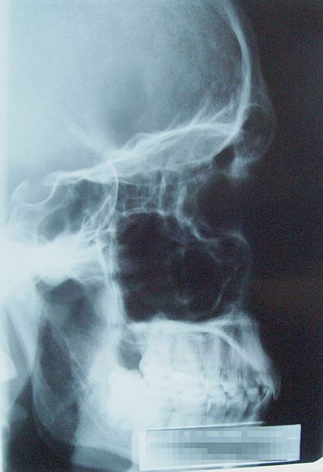

File:X-Ray Skull.jpg
From Wikipedia, the free encyclopedia

Size of this preview: 411 × 600 pixels. Other resolutions: 164 × 240 pixels | 329 × 480 pixels | 526 × 768 pixels | 702 × 1,024 pixels.
Original file (1,293 × 1,887 pixels, file size: 1.04 MB, MIME type: image/jpeg)
This is a file from the Wikimedia Commons. Information from its description page there is shown below. Commons is a freely licensed media file repository. You can help. |
| Description |
Čeština: rentgenový snímek paranasálních dutin
Deutsch: Röntgenbild eines männlichen Schädels
English: Lateral projection of the paranasal sinuses
|
||||||||
| Date | |||||||||
| Source | Own work | ||||||||
| Author | Photo by Mnolf | ||||||||
| Permission (Reusing this file) |
|

{kind=link}
{kind=link}
{kind=link}
{kind=link}
{kind=link}
File history
Click on a date/time to view the file as it appeared at that time.
| Date/Time | Thumbnail | Dimensions | User | Comment | |
|---|---|---|---|---|---|
| current | 06:53, 9 June 2005 |  | 1,293 × 1,887 (1.04 MB) | Mnolf | X-Ray Image of a male skull Source: Mnolf {{GFDL}} Category:X-Ray Body_parts Head\ |
File usage
The following pages on the English Wikipedia link to this file (pages on other projects are not listed):
Global file usage
The following other wikis use this file:
- Usage on bg.wikipedia.org
- Usage on bn.wikipedia.org
- Usage on ca.wikipedia.org
- Usage on cs.wikipedia.org
- Usage on de.wikipedia.org
- Usage on en.wikibooks.org
- Usage on fa.wikipedia.org
- Usage on fr.wikipedia.org
- Usage on hi.wikipedia.org
- Usage on it.wikipedia.org
- Usage on kn.wikipedia.org
- Usage on ku.wiktionary.org
- Usage on lt.wikipedia.org
- Usage on ms.wikipedia.org
- Usage on nv.wikipedia.org
- Usage on pl.wikipedia.org
- Usage on pl.wiktionary.org
- Usage on ru.wikipedia.org
- Usage on si.wikipedia.org
- Usage on sr.wikipedia.org
- Usage on th.wikipedia.org
- Usage on vi.wikipedia.org
- Usage on vi.wiktionary.org
- Usage on yi.wikipedia.org
- Usage on zh.wikipedia.org
{kind=link}
{kind=link}
{kind=link}
{kind=link}
{kind=link}